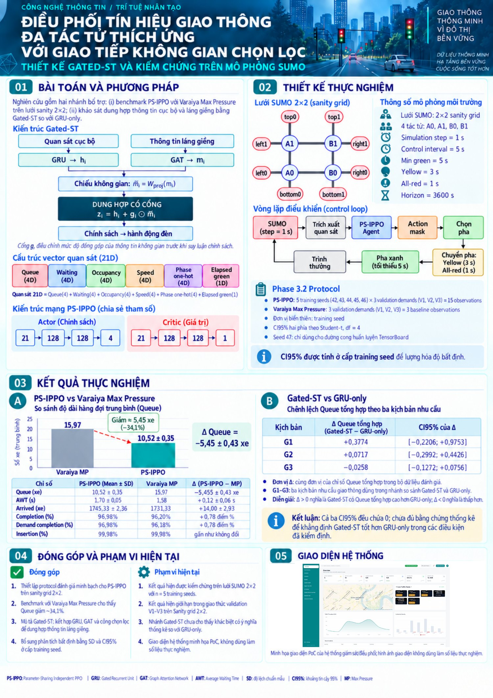
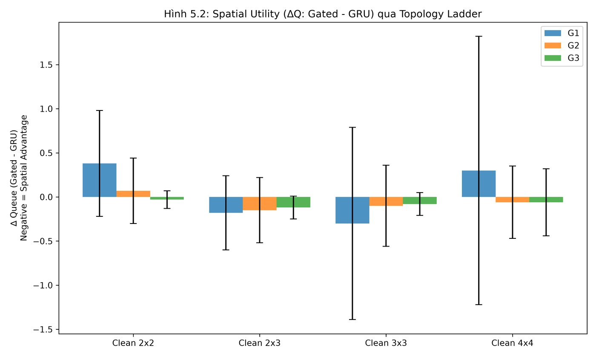
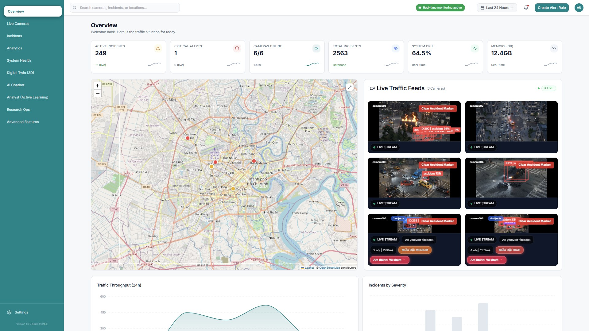
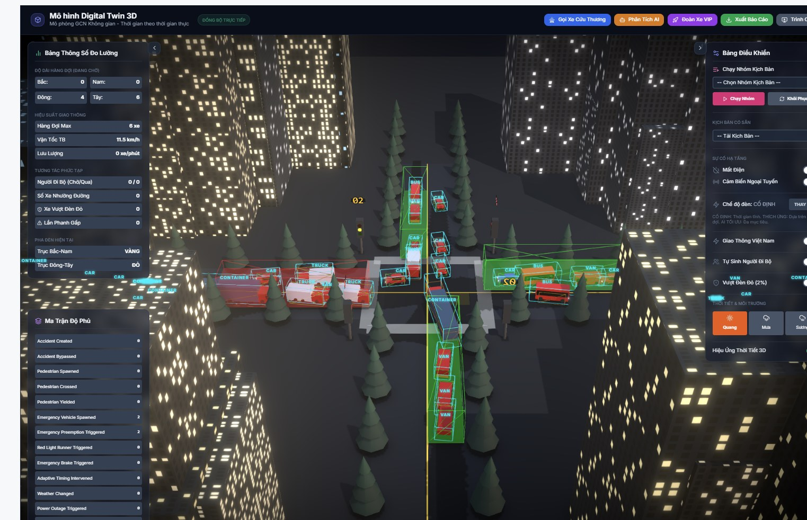

Full-Stack & AI Automation Engineer (Junior / Intern) · Remote from Vietnam (UTC+7)Kỹ sư Full-Stack & AI Automation (Junior / Thực tập) · Remote từ Việt Nam (UTC+7)
I build AI-assisted products end to end: a payment-integrated e-commerce platform with an AI admin agent, and multi-agent research reported with honest statistics. Final-year IT student at UTH (graduating 05/2027), available for remote work now.
Tôi xây dựng sản phẩm có ứng dụng AI từ đầu đến cuối: nền tảng thương mại điện tử tích hợp thanh toán cùng AI admin agent, và nghiên cứu đa tác tử với số liệu thống kê trung thực. Sinh viên năm cuối CNTT tại UTH (tốt nghiệp 05/2027), sẵn sàng làm remote ngay.
SieuthiMMO — E-commerce platform with AI admin agentNền tảng TMĐT với AI admin agentFull-stack · Production
A storefront for digital products and services with wallet, coupons, QR checkout, a customer dashboard, an admin area, realtime support chat, price alerts and AI helpers. Deployed with Docker Compose and Nginx on a Linux VPS. Live: sieuthimmo.tech. Source is in a private repository; I can walk through it on a call.
Cửa hàng sản phẩm/dịch vụ số với ví, coupon, thanh toán QR, dashboard khách hàng, khu quản trị, chat hỗ trợ realtime, cảnh báo giá và các tính năng AI. Triển khai bằng Docker Compose và Nginx trên VPS Linux. Trực tuyến: sieuthimmo.tech. Mã nguồn nằm trong repo private; tôi có thể trình bày trực tiếp qua cuộc gọi.
Payments that credit themselvesThanh toán tự ghi nhận
VietQR checkout; incoming bank transfers are matched via SePay webhook/sync and update the order automatically.Checkout VietQR; giao dịch chuyển khoản được đối soát qua SePay webhook/sync và tự cập nhật đơn hàng.
Unique txHash constraint on transactions blocks double-crediting at the database level.Ràng buộc unique txHash ở tầng database chống cộng tiền trùng.
Purchase runs in one DB transaction: balance check, deduction, stock marking, order creation.Mua hàng chạy trong một DB transaction: kiểm tra số dư, trừ tiền, đánh dấu tồn kho, tạo đơn.
AI agent with human approvalAI agent có bước duyệt của người
The admin AI never writes directly: it creates a proposal with reason, confidence, risk level and a snapshot of the previous state.AI admin không ghi trực tiếp: tạo proposal kèm lý do, độ tin cậy, mức rủi ro và snapshot trạng thái cũ.
Only allow-listed fields can change; proposals expire after 1 hour and carry a target version; actions land in an audit log.Chỉ các trường trong allow-list được sửa; proposal hết hạn sau 1 giờ, gắn version đích; hành động được ghi audit log.
LLM replies are validated: upstream error phrases rejected, JSON extracted from mixed text, otherwise a typed error.Phản hồi LLM được kiểm tra: loại câu báo lỗi của upstream, tách JSON từ văn bản lẫn, nếu không hợp lệ trả lỗi có kiểu.
Operations & qualityVận hành & chất lượng
JWT with refresh sessions, Google OAuth, 2FA, role guards, request logging, timeouts.JWT kèm refresh session, Google OAuth, 2FA, phân quyền, request logging, timeout.
Realtime support chat (Socket.IO) with tickets; semantic product search with keyword fallback if the LLM fails.Chat hỗ trợ realtime (Socket.IO) kèm ticket; tìm kiếm ngữ nghĩa có fallback từ khóa khi LLM lỗi.
What I would improve next:Việc tôi sẽ cải thiện tiếp:store money as integers/Decimal instead of floats, move secrets fully out of compose files into a secret store, add end-to-end tests for the payment webhook path, and replace the cookie-session AI provider with an official API key flow.lưu tiền bằng số nguyên/Decimal thay vì float, chuyển hết secret khỏi file compose sang secret store, thêm test end-to-end cho luồng webhook thanh toán, và thay provider AI dùng cookie-session bằng API key chính thức.
Traffic MAS — Vision + multi-agent RL for traffic controlThị giác + MARL cho điều phối giao thôngResearch · Eureka 2026
Team research project at the UTH AI Lab, submitted to the Eureka 2026 student research awards: (1) a camera → Kafka → validation event pipeline for incident detection, and (2) a multi-agent RL study on a SUMO 2×2 grid comparing a gated spatial-communication model (Gated-ST: GRU + GATv2 + gate) against a matched GRU-only control.
Đề tài nhóm tại Phòng AI UTH, nộp giải Sinh viên NCKH Euréka 2026: (1) pipeline sự kiện camera → Kafka → xác thực để phát hiện sự cố, và (2) nghiên cứu MARL trên lưới SUMO 2×2 so sánh mô hình giao tiếp không gian có cổng (Gated-ST: GRU + GATv2 + gate) với đối chứng GRU-only tương ứng.

Eureka 2026 poster (Vietnamese): method, SUMO setup, results with 95% CIs, contributions and scope.Poster Euréka 2026: phương pháp, thiết lập SUMO, kết quả kèm CI 95%, đóng góp và phạm vi.
Result I can stand behind: Gated-ST vs GRU-onlyKết quả có bằng chứng: Gated-ST so với GRU-only
ScenarioKịch bản
Δ total queue (Gated − GRU)
95% CI
G1
+0.3774
[−0.2206, +0.9753]
G2
+0.0717
[−0.2992, +0.4426]
G3
−0.0258
[−0.1272, +0.0756]
All three intervals contain 0, so there is not enough statistical evidence that Gated-ST beats the GRU-only control. 5 training seeds, Student-t intervals, matched control to separate environment shift from communication shift. I report this as a null result rather than overselling it.
Cả ba khoảng tin cậy đều chứa 0, nên chưa đủ bằng chứng thống kê để kết luận Gated-ST tốt hơn đối chứng GRU-only. 5 seed huấn luyện, khoảng tin cậy Student-t, đối chứng tương ứng để tách thay đổi môi trường khỏi thay đổi giao tiếp. Tôi báo cáo đây là kết quả không có khác biệt thay vì phóng đại.

Δ queue across 2×2, 2×3, 3×3, 4×4 grids with error bars; intervals straddle zero.Δ queue trên lưới 2×2, 2×3, 3×3, 4×4 kèm thanh sai số; các khoảng đều cắt qua 0.
24 services defined in Docker Compose; Kafka and Zookeeper boot verified; Go temporal validator filters events in a 3-second window.24 service định nghĩa trong Docker Compose; đã xác minh Kafka và Zookeeper khởi động; validator Go lọc sự kiện trong cửa sổ 3 giây.
Reproducibility manifest (git commit, seeds 42–46, CI method) and a validation framework with a 19-requirement traceability matrix, informed by FHWA and ISO 34502.Manifest tái lập (git commit, seed 42–46, phương pháp CI) và khung validation với ma trận truy vết 19 yêu cầu, tham chiếu FHWA và ISO 34502.
15 unit tests passing for router, validator, incident store and shared core; 34 scenario tests written.15 unit test đạt cho router, validator, incident store và shared core; đã viết 34 scenario test.
Transparency: scope and limitsMinh bạch: phạm vi và giới hạn
The camera → Kafka → MARL controller chain is a design; it was not run end to end.Chuỗi camera → Kafka → bộ điều khiển MARL mới ở mức thiết kế, chưa chạy end-to-end.
PS-IPPO vs Max Pressure (queue 10.52 vs 15.97 vehicles, about −34%) is from the submitted report; the raw logs were not retained, so I treat it as historical and plan a re-run.PS-IPPO so với Max Pressure (queue 10,52 so với 15,97 xe, khoảng −34%) lấy từ báo cáo đã nộp; log gốc không còn nên tôi coi là số liệu lịch sử và dự định chạy lại.
Throughput figures (e.g. msg/s) and calibration numbers from mock models were removed from the claims.Các số liệu thông lượng (vd msg/s) và số calibration từ mô hình mock đã được gỡ khỏi phần khẳng định.

Operations Dashboard: 6 live CCTV camera streams with real-time AI incident detection (YOLOv8n) & interactive HCMC incident map.Bảng điều khiển Vận hành: 6 luồng camera giao thông trực tiếp kèm nhận diện sự cố AI (YOLOv8n) & bản đồ sự cố TP.HCM.

3D Digital Twin: Real-time spatio-temporal intersection simulation with 3D bounding boxes & live queue measurements.Mô hình Digital Twin 3D: Giả lập nút giao không gian - thời gian với bounding box 3D & đo đạc hàng đợi trực tiếp.
LLM integration with validated outputs, human-approved agent actions, webhooks, scheduled sync, n8n-workflow-aware toolingTích hợp LLM có kiểm tra đầu ra, hành động agent cần người duyệt, webhook, đồng bộ theo lịch, công cụ nhận diện workflow n8n
Written docs, ADRs, runbooks, async communication, reading English technical documentsTài liệu viết, ADR, runbook, giao tiếp bất đồng bộ, đọc tài liệu kỹ thuật tiếng Anh
SieuthiMMO docs
AwardsGiải thưởng2021 – 2026
10/2026
Third Prize — National Youth Innovation Competition 2026Giải Ba — Cuộc thi Sáng tạo trẻ quốc gia năm 2026
AI
11/2024
Top 200 Nationwide — Euréka Scientific Research AwardsTop 200 Toàn quốc — Giải thưởng SV NCKH Euréka
IT
09/2024
Top 10 Finalists — SSE National Startup CompetitionTop 10 Đội xuất sắc — Cuộc thi Khởi nghiệp SSE 2024
Tech
12/2021
Third Prize (Provincial) — Youth & Children Innovation ContestGiải Ba cấp Tỉnh — Sáng tạo Thanh thiếu niên, Nhi đồng
Automation
Let's talkLiên hệRemote · UTC+7
Open to remote internships and junior roles in AI automation, LLM-powered products and full-stack development. I work asynchronously, write things down, and can overlap with Asia-Pacific and European hours.
Sẵn sàng cho thực tập và vị trí junior remote về AI automation, sản phẩm dùng LLM và full-stack. Tôi làm việc bất đồng bộ, ghi chép rõ ràng, có thể trùng giờ với châu Á–Thái Bình Dương và châu Âu.